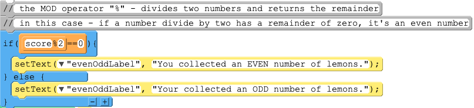
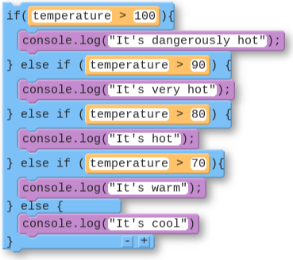
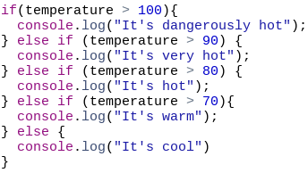
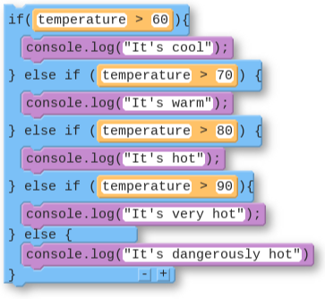

Today you will read and modify the Lemon Squeeze app to see how if, if-else, and if-else-if statements let a program make decisions.
A water park lets a visitor on a ride if they are 48 or more inches tall OR they are 14 years old or older. Build the flowchart for this decision.
Drag each card to its spot, or click a card and then a spot.
In everyday conversation, people switch between the words “when” and “if” without thinking about it.
“When the user clicks the button...”
“When the user has more than 100 points...”
“If the user clicks the button...”
“If the user has more than 100 points...”
In a program, these two words describe different code. Which of these sentences describes an event, and which describes a decision?
“When” means there is an onEvent that responds to user input. The app does something when the user clicks.
“If” means there is a conditional statement that decides which code runs. The app does something if a Boolean expression evaluates to true.
Many programs use both: when the button is clicked, the app checks if the player has enough points.
onEvent("button", "click", function() {
if (score > 100) {
setText("message", "You win!");
}
});1Open Lesson 6, Level 1 on Code.org.
2The program asks three questions that use the information stored in the variables at the top.
3Read the code and predict the output: which of the three questions will show true? Then run the code to check your prediction.
A short Code.org video about how an if statement runs code only when its condition is true.
1Open Level 2 and play the game at least once.
2Your teacher will assign your pair one code section.
3Read the code in your section carefully. Make sure you understand how each line works.
Find partners from the two other sections. Take turns, and make sure every section gets explained.
1Explain what your section does.
2Call out any lines of code you thought were interesting or confusing.
3Ask good questions about how their sections work, such as “I don’t understand this line,” “What does this command do?” or “Could your section have been written another way?”
Right now the game keeps going when the player has 0 lives. Fix this problem.
Look at the if statement at the end of the lime event handler. Read its condition aloud with lives = 0. Does it evaluate to true?
A short Code.org video about if-else statements, which choose between two blocks of code.
Open Level 3 and play the game at least once. Notice what is different about the end game screen.

With a partner, discuss how you think the MOD operator % works. This code is on lines 53 to 59, though your line numbers might be a little different.
The MOD operator % gives the remainder that is left over after one number is divided by another.
2 goes into 3 one time, with 1 left over.
Divide 17 by 5 the way you would on paper.
What does 14 % 4 evaluate to?
1Deciding if a number is even or odd. If you divide a number by 2 and there is no remainder, the number is even: score % 2 == 0.
2Checking whether one number is divisible by another: lemons % 5 == 0 is true for 5, 10, 15, and so on.
3Doing something every n times, like every third click: clicks % 3 == 0.
It takes 5 lemons to make 1 cup of lemon juice. Instead of telling the user whether they collected an even or odd number of lemons, modify the program to tell them:
1“You collected enough lemons for an EXACT number of cups of lemon juice” if they collected a multiple of 5.
2“The amount of lemons you collected does NOT make an exact number of cups of lemon juice” if they did not.
A short Code.org video about if-else-if statements, which check several conditions in order.
1Open Level 4 and play the game at least once.
2Discuss with a partner what has changed in how the game works.
3Find the if-else-if statement that was added to the program.
Use the code in Level 4 to build a flowchart for the if-else-if statement that sets the lemon’s size.
Drag each card to its spot, or click a card and then a spot.
Modify the program so that the lemon becomes even smaller when the user has more than 15 points.
Use the + button at the bottom of the if-else-if block to add another branch. Then think carefully: where in the chain does the new check need to go?
A short Code.org video about using the logical operators AND and OR inside conditionals.
1Open Level 5 and play the game at least once.
2Discuss with a partner what has changed in how the game works.
3Find the if-else-if statement that was added. This one uses logical operators.
Use the Level 5 code to flowchart the if-else-if that checks the login.
Drag each card to its spot, or click a card and then a spot.
Modify the app to add one more username and password. You will need to edit both the code and the user interface.
It is never a good idea to put real passwords directly in your code like this. Anyone who can see the code can read them.


An if-else-if statement checks its conditions in order, from top to bottom.
The first condition that evaluates to true runs its code, and the rest of the chain is skipped.
If none of the conditions are true, the final else runs.
Try temperature = 95: 95 > 100 is false, then 95 > 90 is true, so it prints “It’s very hot” and stops.

What is wrong with this code? Trace it with different temperatures.
Try 95: 95 > 60 is true, so it prints “It’s cool” and skips everything else.
Any temperature over 60 stops at the first branch. The other branches can only run for temperatures that are 60 or lower, and then none of their conditions are true either.
Put the most specific case first: check the narrowest condition, like temperature > 100, before the broader ones.
What does the out-of-order code print when temperature is 85?
What is the difference between an if statement, an if-else statement, and an if-else-if statement? How are they similar?
Click two cards to test whether they match. Each term has one definition.
Click two cards to test whether they match. Each term has one definition.
What does it mean to put the most specific case first in an if-else-if statement? Why is it important, and what kinds of errors does it help avoid?